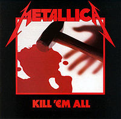
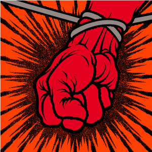

Metalika je metal bend osnovan 1981. poreklom iz Sjedinjenih Americkih Drzava. U pocetku su bili thrash metal(jedan od mnogo zanrova metala) bend, a kasnije su izdavali i sporije pesme koje spadaju u heavy metal.
U pocetku su ih karakterisali brz tempo, instrumentali i agresivne svirke. Metalika je jedno od imena koje se pojavljuje u Velikoj Cetvorki
pored Slayer-a, Megadeth-a i Anthrax-a. Bend nakon svih ovih godina jos uvek nastupa, i idalje imaju jednu od najboljih atmosfera publike. Oni su prvi bend koji je svirao na svih 7 kontinenata.
Clanovi Metalike saradjuju sa odredjenim kompanijama koje prave signature opremu(oprema koja je napravljena po specifikaciji umetnika kome je namenjena). Neke od saradnja su:
| ALBUMI | |||
|---|---|---|---|
| Ime | Izdavac | Godina | Slika |
| Producent | Zanr | ||
| Kill 'em All | Megaforce | 1983 |  |
| Paul Curcio | Thrash Metal | ||
| Ride the Lightning | Megaforce | 1984 |  |
| Flemming Rasmussen | Thrash Metal | ||
| Master of Puppets | Elektra | 1986 |  |
| Flemming Rasmussen | Thrash Metal | ||
| ...And Justice for All | Elektra | 1988 |  |
| Flemming Rasmussen | Thrash Metal | ||
| Metallica | Elektra | 1991 |  |
| Bob Rock | Heavy Metal | ||
| Load | Elektra | 1996 |  |
| Bob Rock | Heavy Metal | ||
| Reload | Elektra | 1997 |  |
| Bob Rock | Heavy Metal | ||
| St.Anger | Elektra | 2003 |  |
| Bob Rock | Nu Metal | ||
| Death Magnetic | Warner Bros | 2008 |  |
| Rick Rubin | Thrash/Heavy Metal | ||
| Hardwired... to Self-Destruct | Blackened | 2016 |  |
| Greg Fidelman | Thrash/Heavy Metal | ||
Bend je osvojio i brojne Grammy nagrade: